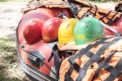
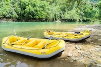
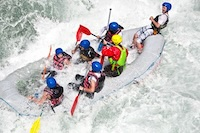

Want the feeling of speed with out the danger are most popular river trail we have to offer, its sure to bring all the excitement and none of the harm. Rocky parts in some places but with a gide it is 100% safe
Its a easy going ride of a life time slow springs perect for those that want to take it easy and, enjoy the sites. Full of birds and other animals this trail is sure to be a magical time for all.


those that truly want the thrill water rafting can off are trail Watch-out got your back. Be toss, and turned on this rocky and fast trail. Gides are required, and is avalable to only the most advanced water rafters enthusiast.
Do you have an concerns or question about are company or water rafting trails. We understand water rafting has it's dangers if you would like please find are contacts for any question you may have! we would be happy to answer any concerns
CONTACT US!